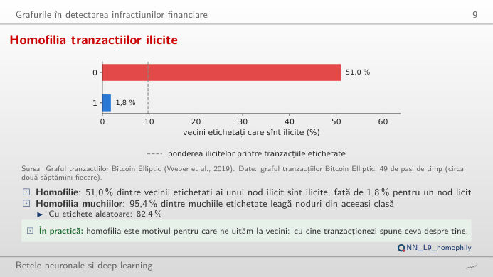
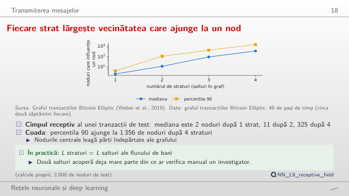
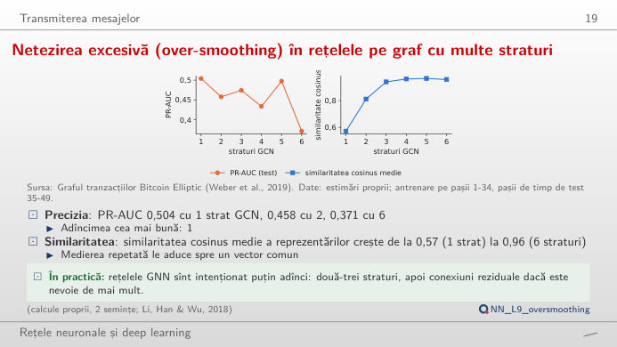
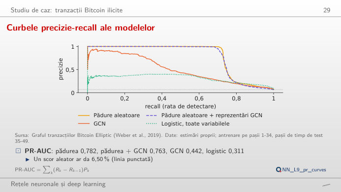
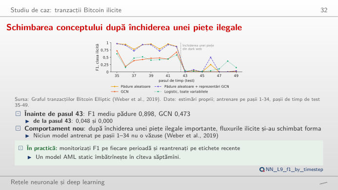
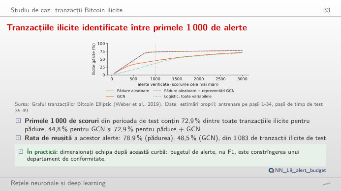

Rețelele neuronale pe grafuri (GNN, graph neural networks) învață din vecinii fiecărui nod. În stînga este slide-ul din curs, în dreapta aceeași figură, recalculată în browser din graful Bitcoin Elliptic și din scorurile modelelor din curs cînd modificați un control: rețeaua convoluțională pe graf (GCN, graph convolutional network), eșantionarea și agregarea pe graf (GraphSAGE, graph sample and aggregate), rețeaua cu atenție pe graf (GAT, graph attention network), perceptronul multistrat (MLP, multilayer perceptron), regresia logistică și pădurea aleatoare, testate pentru combaterea spălării banilor (AML, anti-money laundering). Butonul ▶ modifică parametrul principal pas cu pas. Sub fiecare figură: o sinteză numerică, o întrebare pentru sală și Quantlet-ul cu codul figurii.
Grafurile în detectarea infracțiunilor financiare · Transmiterea mesajelor · Studiu de caz: tranzacții Bitcoin ilicite
Grafurile în detectarea infracțiunilor financiare
Homofilia tranzacțiilor ilicite

Răspuns
Nu. Modificați pasul de timp: în pasul 29, vîrful perioadei de antrenare, ponderea este 86,2% (276 de tranzacții ilicite cu vecini etichetați), în pasul 9 este 25,4%, iar în cîțiva pași este 0. Homofilia muchiilor pe întregul graf este 95,4%, față de 82,4% dacă etichetele ar fi atribuite aleator. Homofilia este semnalul pe care îl exploatează o rețea GNN, iar intensitatea ei variază în timp: încă un motiv pentru a testa în ordine cronologică.
Transmiterea mesajelor
Fiecare strat lărgește vecinătatea care ajunge la un nod

Răspuns
1.259 de tranzacții (numărare exactă în graful complet): 3 după o rundă, 27 după două, 283 după trei și 3.081 după șase. Eșantionul din curs, de 2.000 de tranzacții de test, are o mediană de 2, 11, 87 și 325 de noduri după 1–4 runde. Cu etichetele cunoscute ca semnal, ponderea etichetelor ilicite în centru, ponderată după grad, scade de la 1,00 (k = 0) la 0,68 (k = 4) și 0,56 (k = 6): cu cît mesajele ajung mai departe, cu atît centrul seamănă mai mult cu media unei vecinătăți mari.
Netezirea excesivă (over-smoothing) în rețelele pe graf cu multe straturi

Răspuns
Fiecare strat face media unui nod cu vecinii săi, așa că reprezentările ajung să semene. În medie pe 2 semințe, rețeaua GCN antrenată are PR-AUC 0,504 cu un strat, 0,458 cu două și 0,371 cu șase, iar similaritatea cosinus medie a reprezentărilor crește de la 0,57 la 0,96. Panoul din dreapta repetă doar medierea, fără ponderi antrenate: similaritatea cosinus a celor 165 de variabile propagate crește de la 0,29 (variabilele brute) la 0,56 după 3 runde și 0,69 după 10. Sămînța 1 și sămînța 2 diferă, de aceea cursul raportează medii.
Studiu de caz: tranzacții Bitcoin ilicite
Curbele precizie-recall ale modelelor

Răspuns
La pragul 0,5, regresia logistică pe toate variabilele găsește 77,1% dintre tranzacțiile ilicite de test (recall), dar numai 22,0% dintre alertele ei sînt ilicite (precizie); pădurea aleatoare găsește 72,5%, cu o precizie de 92,7%. Curba arată întregul compromis: cu scorurile mediate pe semințe, aria de sub ea este 0,785 pentru pădure, 0,499 pentru GCN, 0,596 pentru GraphSAGE și 0,311 pentru regresia logistică, față de o rată de bază de 6,5%. Modificați pragul: pădurea rămîne deasupra celorlalte modele la aproape orice recall.
Schimbarea conceptului după închiderea unei piețe ilegale

Răspuns
Nu. Din pasul 43, F1 mediu al pădurii este 0,048 la pragul 0,5 și 0,015 la pragul 0,2; rețeaua GCN scade de la 0,473 la 0,000 la pragul 0,5. Un prag mai mic adaugă alarme false, dar nu găsește noul tip de fluxuri ilicite, pe care niciun model antrenat pe pașii 1–34 nu le văzuse. Doar regresia logistică păstrează puțin recall (F1 mediu 0,151 după pasul 43 la pragul 0,2), cu prețul multor alerte false. Schimbarea conceptului se corectează prin reantrenare pe etichete recente, nu prin mutarea pragului.
Tranzacțiile ilicite identificate între primele 1.000 de alerte

Răspuns
Cu pădurea aleatoare găsește 72,9% dintre ele (789 dintre cele 1.000 de alerte sînt ilicite, o rată de succes de 78,9%); cu GCN, 44,8% (rată de succes 48,5%); cu regresia logistică pe toate variabilele, 36,6%. Alegeți pădurea și priviți panoul din dreapta: aproape toate tranzacțiile găsite sînt în pașii 35–42, înainte de închiderea pieței; tranzacțiile ilicite din pașii 43–49 sînt rareori găsite, oricare ar fi bugetul. Bugetul de alerte, nu F1, dimensionează o echipă de conformitate.
Date: graful tranzacțiilor Bitcoin Elliptic (Weber et al., 2019): 203.769 de tranzacții, 234.355 de fluxuri de plăți, 165 de variabile, 49 de pași de timp de circa două săptămîni. Modele antrenate pe pașii 1–34 și testate pe pașii 35–49 (16.670 de tranzacții de test etichetate, dintre care 1.083 ilicite); scorurile sînt mediate pe semințele fiecărui model (estimări proprii, lectures/L9/analysis_L9.py).